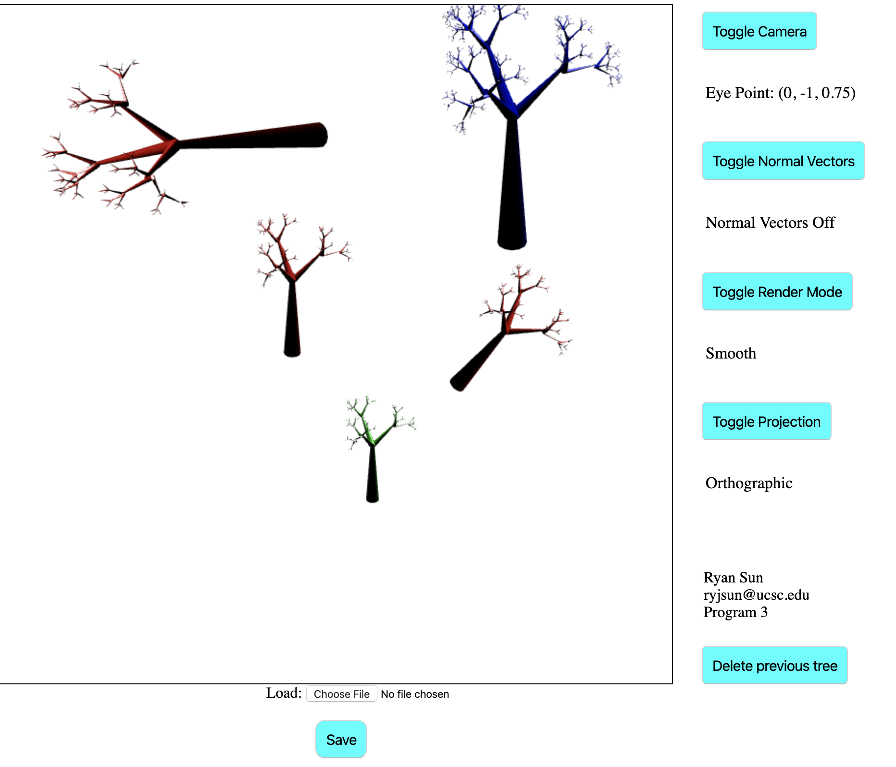
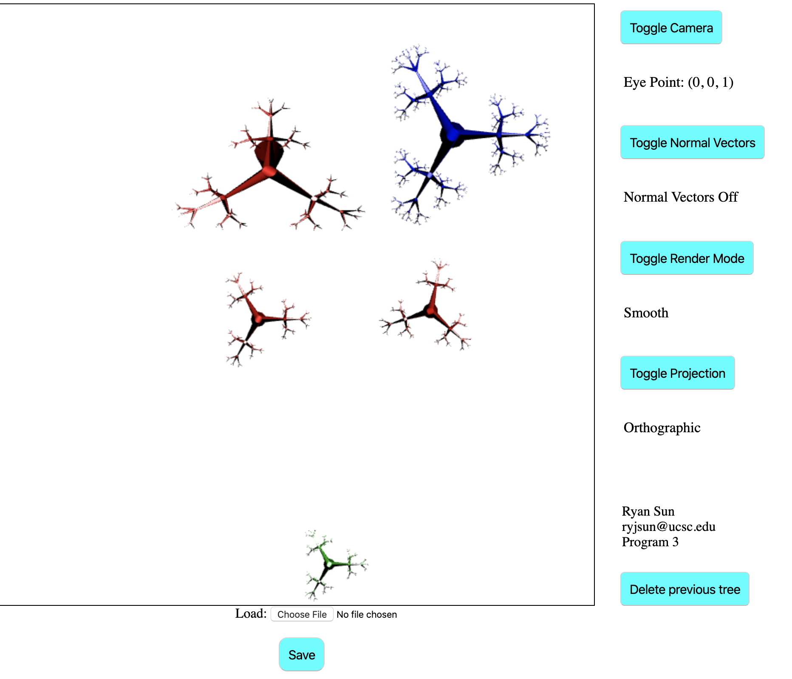

This program allows the user to modify the trees in the scene. A tree can be translated, rotated, or scaled.
These modifications can be done in any order and are cumulative. Select a tree by left clicking on it.
Only one tree can be selected at a time. You can deselect a tree by clicking an empty spot on the canvas. This will return the selected tree to its originial color.
If you click on another tree while a tree is already selected, nothing will happen.
Scroll up to scale the tree up and scroll down to scale it down.
Translation happens when left click and mouse movement is detected. Z-translation is with the middle mouse button
Rotation happens when right click and mouse movement is detected. Moving horizontally rotates it around the Z axis, move vertically for rotation around the X axis
Screenshots:
 